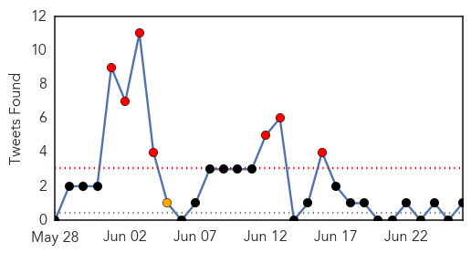

Unknown
30-Day Web Trend
15 alerts, 4 warnings

30-Day Twitter Trend
7 alerts, 11 warnings

Article Locations

Article Confidences

Top Articles:
- 0.999
- Update; Death toll rises to 31 due to outbreak
- 0.998
- South Korean man who was China's only MERS case recovers
- 0.998
- Another Samsung doctor contracts MERS
- 0.993
- Two more die of MERS in S Korea, including caregiver , news, Health News, AsiaOne YourHealth
- 0.992
- Fear in the air
- 0.990
- S Korea to jail people defying MERS quarantine measures
- 0.989
- South Korea passes new law to curb MERS outbreak
- 0.988
- South Korea hospitals to monitor emergency room visitors in battle on MERS
- 0.985
- South Korean hospitals ordered to track ER visitors in battle on MERS
- 0.978
- Pattaya News, Communities, Opinions and much more...
- 0.977
- Meningococcal case sparks warning
- 0.968
- Foreign Policy
- 0.964
- Six more anthrax cases detected in Koraput village
- 0.956
- South Korea To Track All Emergency Ward Visitors As 2 More Deaths Reported In MERS Outbreak
- 0.952
- CDC Warns of the Health Dangers of Pool Water
- 0.950
- China's first MERS patient discharged from hospital
- 0.949
- Indonesia at high risk of MERS: officials
- 0.947
- Officials check Bangkok hospitals' readiness to treat MERS cases
- 0.945
- New illnesses mean more reason to watch out for ticks
- 0.928
- South Korean man who sparked Mers health scare in China discharged from hospital
- 0.923
- S Korea passes law to contain deadly MERS outbreak
- 0.917
- Chicago Tribune
- 0.917
- Chicago Tribune
- 0.917
- Chicago Tribune
- 0.917
- Chicago Tribune
- 0.917
- Chicago Tribune
- 0.917
- Chicago Tribune
- 0.917
- Chicago Tribune
- 0.917
- Chicago Tribune
- 0.917
- Chicago Tribune
- 0.917
- Chicago Tribune
- 0.917
- Chicago Tribune
- 0.917
- Chicago Tribune
- 0.917
- Chicago Tribune
- 0.917
- Chicago Tribune
- 0.917
- Chicago Tribune
- 0.917
- Chicago Tribune
- 0.917
- Chicago Tribune
- 0.917
- Chicago Tribune
- 0.917
- Chicago Tribune
- 0.917
- Chicago Tribune
- 0.909
- Private hospitals adhere to MERS control guidelines, MOPH says
- 0.907
- S. Korea Passes New Law to Curb MERS Outbreak
- 0.904
- Swimming pool, hot tub water contamination increasing in the U.S.
- 0.892
- Ticks and Lyme disease
- 0.878
- “Flesh‐eating” virus claims its fourth victim this year in Mississippi
- 0.877
- 86 Alabama Children Who Attended Same Daycare Sick With Possible Food-Borne Illness, S. Aureus Toxin Found
- 0.867
- Indonesia at high risk of MERS
- 0.866
- INSTANT VIEW 6-U.S. Supreme Court makes gay marriage the law of the land
- 0.850
- No new MERS cases for two South Korea hospitals
Showing top 50 articles...
Top Tweets:
- 0.705
- RT: MERS in SouthKorea update: over 170 cases, all linked to health care facilities where MERS patients were treated. http://t…
MERS
30-Day Web Trend
25 alerts, 3 warnings

30-Day Twitter Trend
14 alerts, 12 warnings

Article Locations

Article Confidences

Top Articles:
- 1.000
- News Scan for Jun 26, 2015
- 0.999
- MERS virus Is WHO doing enough? The Nation
- 0.998
- Asian outbreak sparks MERS concerns
- 0.998
- 45,000 individuals screened for MERS symptoms
- 0.997
- HCM City holds MERS-CoV drill
- 0.996
- Two MERS suspects quarantined in Phuket
- 0.990
- S. Korean MERS patient in China recovered, released from hospital
- 0.990
- Hanoi broadens efforts to prevent MERS-CoV
- 0.989
- Doctor's illness pushes Korea's MERS total to 181
- 0.987
- Patient recovering well: doctors
- 0.986
- S. Korean MERS patient in China recovered, released from hospital
- 0.950
- Russian tourist quarantined in Vietnam tests negative for MERS
- 0.949
- MERS weak spot revealed
- 0.943
- الاخبار المصورة
- 0.877
- Hajj pilgrims should get vaccinated against Mers-COV: Jusuf Kalla
- 0.872
- Airports to install thermo scanners to detect MERS: Director
- 0.847
- Airports to Step up MERS Vigil
- 0.809
- No coronavirus cases among Umrah pilgrims, says Health Ministry
Top Tweets:
- 0.725
- AFD Blog `Korean MERS Cluster: 181 Cases, 31 Deaths' MERS-CoV http://t.co/bTY7jBqgtF
- 0.701
- AFD Blog `WHO: UAE Reports 2 Asymptomatic MERS Cases' MERS-CoV http://t.co/MXA9CbmujG
- 0.603
- EID: Acute Respiratory Infections in Travelers Returning from MERS-CoV–Affected Areas http://t.co/7yjl8jPUJE